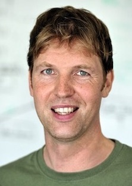

Ubiquitous Computing, H-A 8110
University of Siegen
Hölderlinstr. 3
57076 Siegen
+49(0)271/740-23-12
kvl@eti.uni-sie..
Office hours: open door policy
Lab map
(Wearable) sensing systems, ubiquitous computing, activity
recognition, wireless sensor networks, machine learning, signal
processing
-
2016, University of Siegen, DE: Professor for
Ubiquitous Computing
-
2014, University of Freiburg, DE: Professor for
Embedded Systems
-
2010, TU Darmstadt, DE: Emmy Noether Research Group
(DFG) Leader of Embedded Sensing Systems,
-
WS 2012-13: University of Passau, DE: guest
professor for Embedded Systems
-
2006, TU Darmstadt, DE: postdoc with Bernt
Schiele's Multimodal Interactive Systems group
-
2001, University of Lancaster, UK: PhD (2006) at
Hans Gellersen's Embedded Interactive Systems group
-
1999, Starlab Research, BE: industrial research with Nokia, Philips,
Epson, and other companies
-
1999: 'Licentiaat' (M.Sc.) Computer Science degree at the University
of Brussels, BE: (projects at Luc Steels' VUB AI
lab, Master's thesis: "Adaptive Context Awareness" supervised by
Bernard Manderick), 1997: 'Kandidaat' Computer Science degree at the
University of Hasselt, BE; Highschool:
Latin-Sciences at College Essen, BE